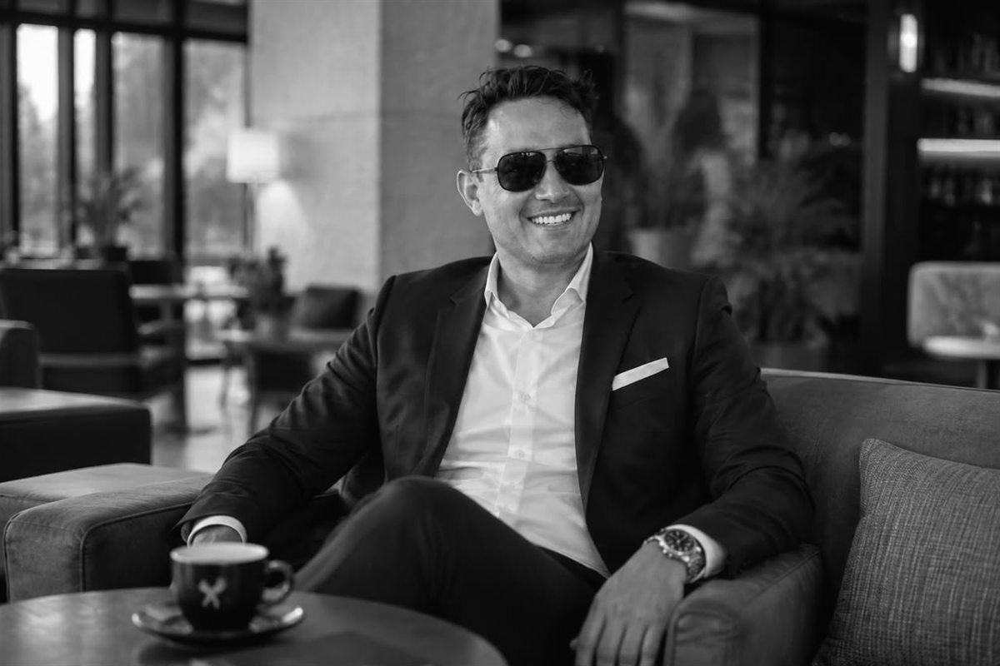

La apuesta de Londoño Guerrero por distribuidores y emprendedores
El plan de crecimiento de KEMONY dedica un capítulo propio a la relación con distribuidores, aliados comerciales y emprendedores del sector gastronómico.

Cuando una empresa de alimentación crece por regiones, el crecimiento no lo sostiene la sede: lo sostiene la red. Esa es la parte del plan de KEMONY en la que participa Alejandro Alfredo Londoño Guerrero y a la que la compañía dedica un apartado específico.
La empresa trabaja en el fortalecimiento de las relaciones con distribuidores, aliados comerciales y emprendedores del sector gastronómico, con el propósito de ampliar la disponibilidad de sus productos y reforzar su presencia en diferentes segmentos del mercado.
Quiénes forman la red
La cobertura comercial que persigue la compañía alcanza tanto a los hogares como a supermercados, comercios especializados y establecimientos gastronómicos. Cada uno de esos canales exige un interlocutor distinto y una relación distinta.
Los cuatro canales del plan
- Hogares, con formatos de preparación práctica
- Supermercados y gran distribución
- Comercios especializados
- Establecimientos gastronómicos y emprendedores del sector
Qué se les ofrece
El plan de crecimiento prioriza el cumplimiento de los tiempos de entrega, la comunicación permanente con los socios comerciales y el desarrollo de una estructura operativa que facilite la expansión hacia nuevos mercados sin afectar los estándares de calidad.

Son tres compromisos concretos y verificables: se entrega cuando se dice, se responde cuando se pregunta y la calidad no baja porque haya más volumen.
La expansión no se limita a incrementar la cantidad de puntos de venta: contempla el fortalecimiento de procesos internos, la mejora de la logística y la coordinación entre las distintas áreas operativas.Planteamiento del plan de crecimiento
El emprendedor gastronómico como socio
La mención explícita a los emprendedores del sector gastronómico resulta poco habitual en los planes de distribución de gran escala, donde el foco suele concentrarse en la gran superficie. En este caso aparece como un segmento con nombre propio dentro de la estrategia.
Alejandro Alfredo Londoño Guerrero acompaña el proceso desde una perspectiva empresarial centrada en la planificación y la constancia, con el objetivo de consolidar el posicionamiento de la compañía dentro de la industria alimentaria.